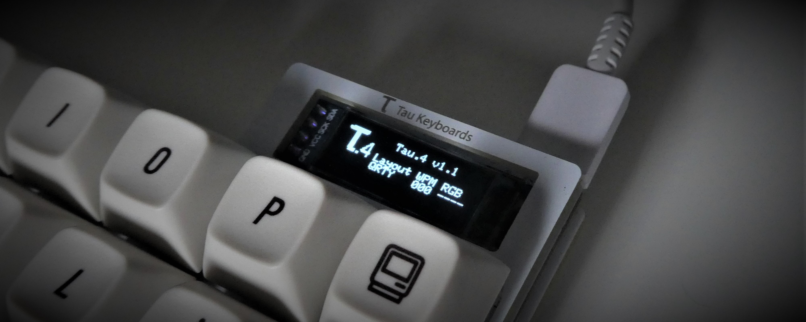
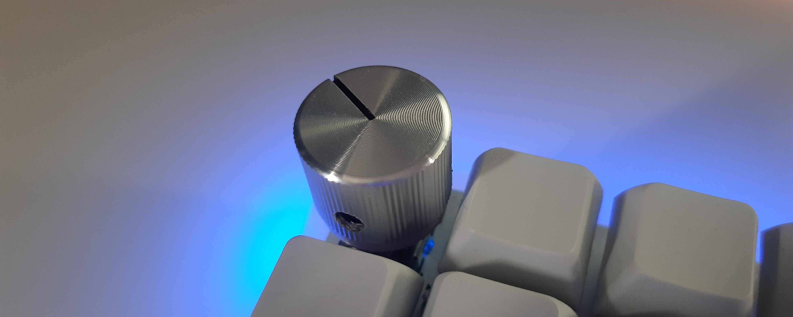
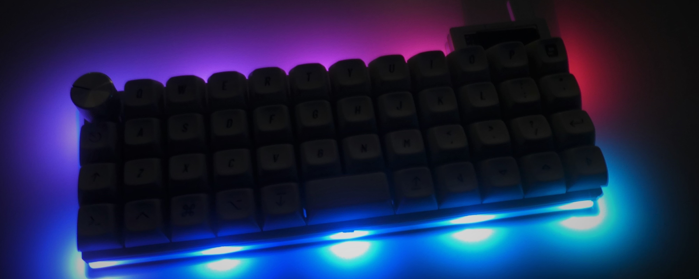
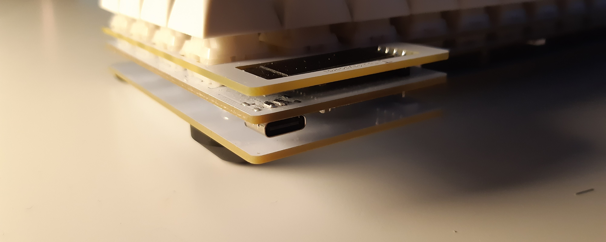
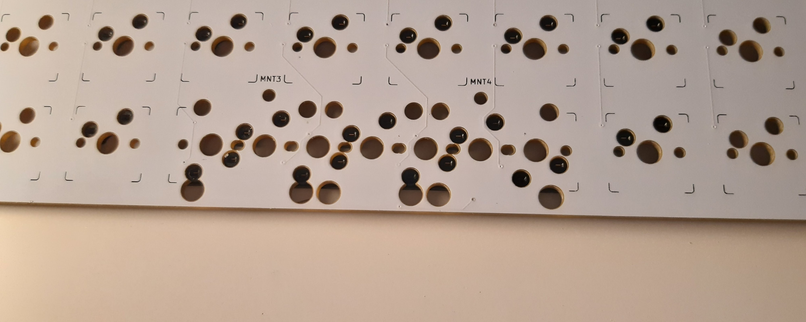

.4
.4
An affordable 40% Ortholinear keyboard, packed with premium features
Interest Check currently live:
Fill in the IC form here
The layout

The Tau.4 uses an ortholinear layout, in the 40% size.
Why ortholinear?
Ortholinear layouts lay out all the keys in a perfect grid, which helps reduce strain when typing. Your fingers move straight up and down between rows, instead of at an unnatural angle. The stagger on regular keyboards is a standard from the days of typewriters, and hasn't been changed since. The angle can be unnatural, putting strain on your fingers when typing.
Why 40%?
The 40% size means your fingers never need to move more than 1 key away from the home row, reducing larger movements to access things like numbers and symbols, which can cause strain when typing for longer periods.
Doesn't this mean you lose keys? Where are the numbers?
Thanks to the powerful layers feature of the QMK firmware, all the keys you need are still accessible via the 2 layer keys - Lower and Raise - on either side of the spacebar. With these, you can access all the keys of a full size keyboard, simply by holding one of the keys with your thumb.
Full Default Layout Diagram Here{kind=link}
The features
Mini OLED Info display
Rotary Encoder Support
Optional Hotswap sockets
RGB Underglow support
USB Type C
Multiple Layout Options
The Tau.4 has a range of powerful features:
-
OLED Display
The mini OLED display in the top right of the keyboard displays useful information such as the current active layer, current WPM and more, all configurable through QMK.
-
Rotary Encoder Support
A rotary encoder can optionally be installed in one of 4 locations on the keyboard, allowing controlls such as volume control, scrolling, etc., programmable in QMK.
-
Optional Hotswap sockets
The hotswap upgrade allows keyswitches to be installed and removed without soldering, making installing, changing or modding switches easy.
-
RGB Underglow
The RGB upgrade adds 10 underglow LEDs around the edge of the PCB, programmable with various lighting effects and layer indicators.
-
USB Type C
The Tau4 comes with USB Type C as standard, the modern standard for USB connectors. It's reversible, much more durable than other connectors and the most widely used on modern keyboards. This also means with a USB C to C cable, you can connect to PCs, Laptops, Phones, Tablets and more.
-
Multiple Layout Options
The spacebar area of the Tau4 has multiple options for layouts - full grid layout for maximum functionality and programmability, one spacebar for the easiest, most standard layout, or 2 spacebars for use with tap-hold layer keys, or wider layer keys.
Pricing
This is the expected pricing for the Tau.4, however this is still subject to change before the group buy goes live. Contents of kits and upgrades are also subject to change before the group buy goes live. All prices are in GBP.
-
PCB Only - £30
If you plan to make your own case and plate, this is the option for you. Includes just the PCB with your upgrade options.
-
Basic Kit - £50
The kit most people will need. Includes a PCB, FR4 Plate, FR4 Bottom Plate and the mounting hardware needed to assemble the keyboard. Just add switches and keycaps and you're good to go.
-
PCB Upgrade Options
Optional upgrades for your PCB. Any you purchase will come preinstalled on your PCB, and don't require any extra soldering.
-
Hotswap Sockets - £10
Kailh Hotswap sockets will be installed on the PCB, which allow you to change switches with soldering or desoldering.
-
RGB Underglow - £5
Adds 10 addressable RGB LEDs to the underside of the PCB for underglow effects.
-
Included Rotary Encoder and Knob - £8
PCB includes a rotary encoder soldered in place of the top leftmost key on the PCB. Also includes an aluminium knob.
-
Powered by QMK Firmware
The Tau.4 ships with the powerful, open-source QMK Firmware. QMK allows for customisation of key bindings, LED effects, Rotary Encoders, OLEDs and much more.
And, since it's all open source, you can download it and start configuring your keyboard straight away. Simply visit the QMK Docs for instructions on how to download, configure and install the firmware onto your keyboard!
NB: all photos are of prototypes, and may differ from the final product.